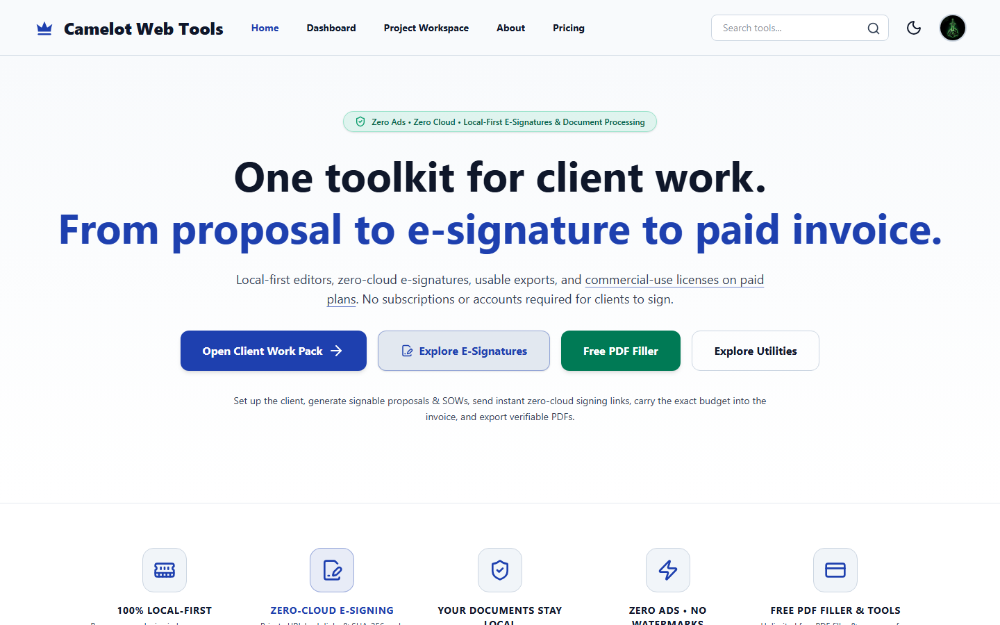

Live Commercial Suite
Web • Desktop NSIS
Camelot Web Tools (CWT)
Privacy-first, 100% client-side multi-tool productivity suite offering 79 professional financial calculators, developer encoders, vector PDF engines, and business document builders. Computes completely within browser Web Workers and Windows desktop runtimes with zero third-party data transmission.
- Integer-cent arithmetic eliminating IEEE-754 floating-point errors.
- In-memory Bates stamping with millisecond collision prevention.
- Deterministic SHA-256 client-side cryptographic hashing envelopes.
- MCP Server package (`camelotwebtools-mcp`) providing 79 tools to AI models.